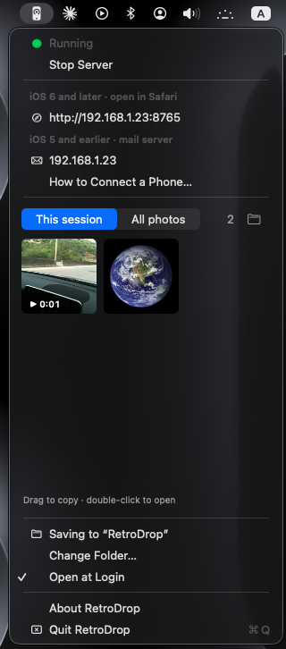
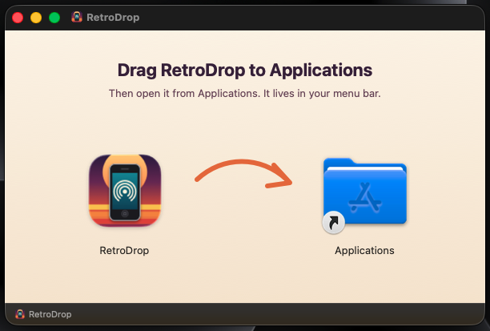
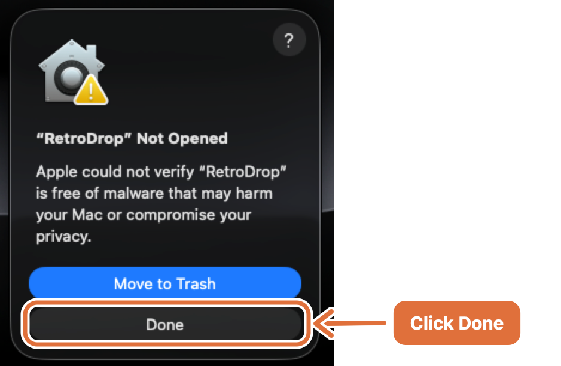
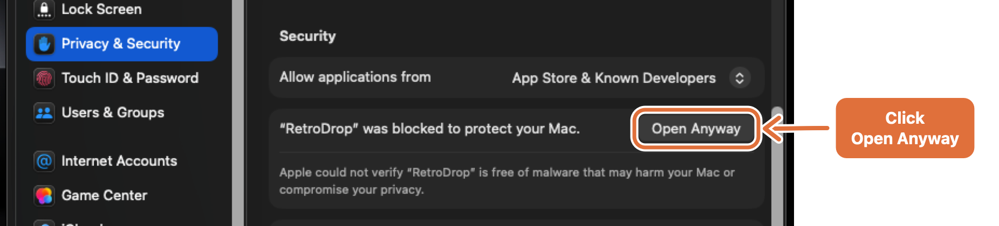
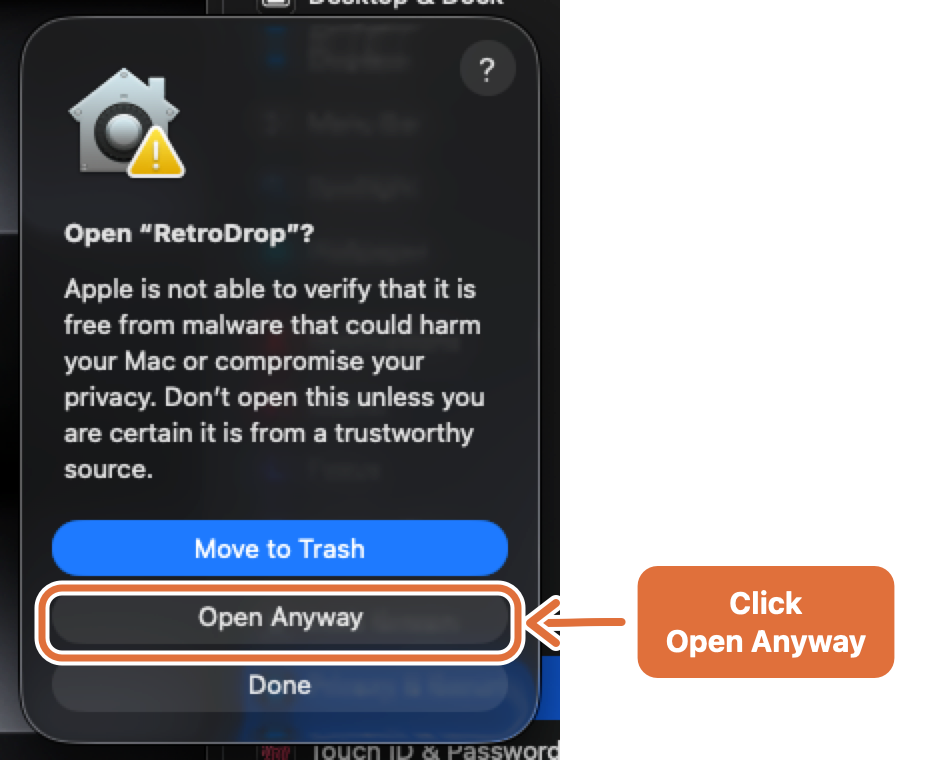

Get photos off old iPhones.
RetroDrop is a little menu bar app that pulls photos and videos off your iPhone 3GS, iPhone 4 and friends over Wi‑Fi, straight into your Mac. No cable, no jailbreak, nothing to install on the phone.
Apple silicon & Intel · Install steps

Two ways in, depending on your phone
Old iPhones can't use AirDrop, iCloud or modern websites. RetroDrop turns your Mac into a tiny server on your home Wi‑Fi that they can talk to. Everything stays on your network.
Upload from Safari
- Click Start Server in the RetroDrop menu.
- On the phone, open Safari and type the address RetroDrop shows, like
http://192.168.1.23:8765. - Tap Choose File, pick photos or videos, tap Upload.
"Email" them to your Mac
- Set up a mail account on the phone that points at your Mac. It's a one-time, two-minute setup.
- In Photos, tap Share → Email Photo and send.
- RetroDrop plays the mail server and keeps the attachments. Nothing is actually emailed.
Photos in your menu bar
New arrivals show up as thumbnails. Drag one onto the desktop or into any app, or double-click to open.
Photos and videos
Long videos too. Thumbnails show each clip's length.
Never overwrites
Old iPhones call everything image.jpg. RetroDrop adds the date and time, so nothing is lost.
Finds your address
Always shows the address your phone needs, with a built-in "How to Connect a Phone" guide.
Stays on your network
No accounts, no cloud, no tracking. The phone talks straight to your Mac.
Tiny and native
A small Mac app with no dependencies, for Apple silicon and Intel. Free and open source (MIT).
Which phones work?
| Phone software | How to send | Notes |
|---|---|---|
| iOS 6 – iOS 10 iPhone 3GS, 4, 4S, 5, 5c | Safari | Photos and videos, several at once |
| iOS 5 e.g. an iPhone 3GS or 4 that was never updated | Safari can't upload files before iOS 6 | |
| iPhone OS 3 – iOS 4 iPhone 2G, 3G, 3GS | Should work the same way, but untested. Tell us how it goes! |
Tested so far: iPhone 3GS on iOS 6 (Safari) and iPhone 4 on iOS 5 (Mail). Your Mac needs macOS 14 Sonoma or later, on the same Wi‑Fi as the phone.
Up and running in a minute
RetroDrop isn't notarized by Apple yet, so macOS asks you to confirm the first time you open it. Here's exactly what to click. You only do this once.
Drag it to Applications
Download RetroDrop,
open RetroDrop.dmg, and drag RetroDrop onto Applications. Then eject the RetroDrop disk.

Open it, then click Done
The first time you open RetroDrop, macOS stops it. Click Done, not Move to Trash.

Click Open Anyway in Settings
Open System Settings → Privacy & Security, scroll down to Security, and click Open Anyway next to the RetroDrop message.

Confirm, and you're done
Click Open Anyway once more and enter your password or use Touch ID. Look for the phone icon in your menu bar. If macOS asks about incoming network connections, click Allow.

Why does macOS warn about it?
Apple charges developers a yearly fee to have apps "notarized", that is, checked before release. RetroDrop is a free hobby project and isn't notarized yet, so macOS can't vouch for it. It doesn't mean anything was found wrong. The complete source code is public, and notarization is planned for a future release.
Full walkthrough, including the one-time Mail setup for iOS 5 phones: setup guide.
Questions
How do I get photos off an iPhone 4 or 3GS without iTunes or a cable?
Install RetroDrop on your Mac and click Start Server. On iOS 6 or later, open the address it shows in Safari and upload your photos and videos. On iOS 5 or earlier, set up the built-in mail route once, then use Share → Email Photo. Either way, the photos arrive in a folder on your Mac over Wi‑Fi. No iTunes, no cable, no jailbreak.
Is it really free?
Yes. No ads, no account, no paid version. It's open source under the MIT license.
Does it need the internet?
No. The phone talks directly to your Mac over your Wi‑Fi. Nothing goes to the cloud.
Is it safe?
RetroDrop only works on your local network and only saves files into one folder. While the server is running, anyone on the same Wi‑Fi could send files to that folder, because old phones can't do modern security. So use it on your home network, not public Wi‑Fi, and stop the server when you're done.
Why not HTTPS?
Old iPhones can't connect to modern secure websites. That's the whole reason RetroDrop exists. It's meant for your home network only.
Can't I just use a cable?
You can! Image Capture over USB still works. RetroDrop is for when you'd rather not dig out a 30‑pin cable, and only want the photos you pick to show up, ready to drag anywhere.
My phone isn't listed. Will it work?
If it runs iOS 6 or later, use Safari. If it's older, use Mail. Please open an issue and tell us how it went, so we can add it to the list.